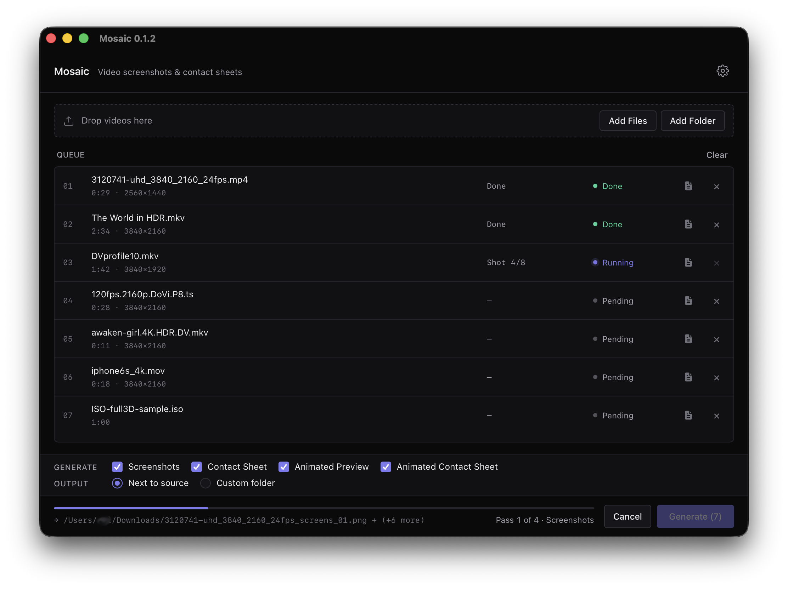

mosaic --version
mosaic v0.1.4 · 2026-04-17 · mac | windows | linux
mosaic --help
MOSAIC // batch video thumbnailer
Generate contact sheets, screenshots, and animated previews
from any ffmpeg-decodable video. Cross-platform,
runs locally, auto-updates from v0.1.2 on.
mosaic-cli sheet movie.mkv
wrote movie_sheet.png · batch-ready CLI for scripts
ls ./available-builds
~/mosaic/cli
Command-line binaries
For scripting, headless servers, and CI. Requires ffmpeg, ffprobe, and mediainfo on PATH — same as the app. Usage docs →
~/mosaic/output-types
4 output types, 1 batch queue
Drop videos or folders, pick what to produce, walk away. Every pipeline runs your local ffmpeg — nothing leaves the machine.
IDX
NAME
DESCRIPTION
OUTPUT
01.
contact_sheets/
Grid of timestamped frames at configurable rows × columns. Ideal for archival indexes or preview catalogs.
02.
screenshots/
Individual frames at evenly-spaced timestamps, with configurable count. Full-resolution, numbered, named after the source video.
03.
animated_reels/
Short clips stitched end-to-end into a single reel. Motion preview without opening a video player.
04.
animated_sheets/
Grid of animated thumbnail clips — every cell loops a short motion clip. Motion at a glance, contact-sheet layout.
~/mosaic/flags
Built for real work
Five decisions that shape how Mosaic behaves under load.
batch-queue
Drop folders. Per-file progress. Cancel at any point without corrupting in-flight outputs.
hdr-tonemap
HDR10, HLG, and Dolby Vision videos produce clean SDR thumbnails without a manual tonemap step.
local-only
Videos never leave the machine. Zero analytics. The only network call is an update check against GitHub's public API.
signed-updates
One-click install on new releases. Every update is cryptographically verified on-device against the app's embedded public key.
mosaic-cli
Every pipeline as a subcommand —
screenshots, sheet, reel, animated-sheet, probe. Stdout is paths-only so it pipes cleanly into xargs. Docs →~/mosaic/screenshots/app.png
The app
Minimal by design. Dark-by-default, follows your system theme. Native on every platform.

mosaic.app · v0.1.3 · mac-universal
prores 422 source